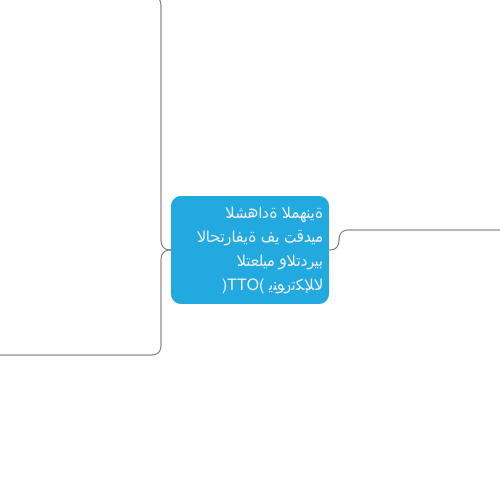

Browsers are
difficult
Please wait, loading your map...

الشهادة المهنية
الاحترافية في تقديم
التعليم والتدريب
الإلكتروني (OTT)
الهدف من الشهادة
تقديم التعليم والتدريب
الاحترافي
إتاحة فرص تعلم مبتكرة
ومرنة
تلبية الاحتياجات الفردية
للمتعلم
مكونات الشهادة
ست مجالات
18 كفاية لكل مجال
75 مؤشر أساسي
المجالات والكفايات
المجال الأول: الإلمام
الرقمي (20%)
كفاية الأدوات والتطبيقات
الرقمية
تصنيف الأدوات والتطبيقات
قابلية الاستخدام (سهولة
التسجيل والدخول)
قابلية المرونة (تفاعل،
إضافة/تعديل، ربط)
قابلية التفاعل (بين المعلم
والمتعلم والأقران)
دمج الأدوات والتطبيقات
الرقمية
استخدام منصات التعليم
الإلكتروني
تقييم واختيار الأدوات
والتطبيقات الرقمية
كفاية المواطنة الرقمية
كفاية الموارد الرقمية
كفاية استكشاف الأخطاء
الرقمية وإصلاحها
المجال الثاني: القيادة
(13%)
المجال الثالث: علم أصول
التدريس (20%)
المجال الرابع: التقييم
(20%)
×
Created using
MindMup.com